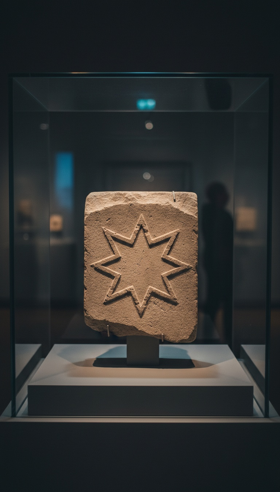

Two figures in the same book are given the same title, and almost nobody has ever read the two verses side by side.
Revelation 22:16 has Jesus describing himself in the first person. "I am the root and the offspring of David, and the bright and morning star." Isaiah 14:12 uses that same image for the figure the King James Version calls Lucifer. Same star. Same title. Opposite owners. And the older manuscripts show that one of those owners was handed his name by a translator working in Bethlehem in the fourth century.

The Hebrew Text Does Not Contain the Word Lucifer
Isaiah 14:12 in Hebrew reads helel ben shachar. Shining one, son of the dawn. There is no proper noun in the line. You can check this against the oldest surviving copy of Isaiah on earth, the Great Isaiah Scroll, pulled out of Qumran Cave 1 in 1947 and dated to roughly 125 BC. It sits under glass at the Shrine of the Book at the Israel Museum in Jerusalem, and it carries the same three consonantal words that every Hebrew manuscript after it carries. No Lucifer.
The Greek translators hit the same problem two centuries before Jerome did. The Septuagint, produced by Jewish scholars in Alexandria between the third and second centuries BC, renders the phrase heosphoros. Dawn bringer. Again a description of a celestial object, not a personal name for a fallen angel.
Modern committees have quietly walked the word back. The New Revised Standard Version prints "Day Star, son of Dawn." The English Standard Version prints the same. The New International Version prints "morning star, son of the dawn." Three separate translation committees, working independently, all reached the conclusion that the King James reading was a Latin import.
Lucifer Was Rome's Word for the Planet Venus
Pope Damasus I commissioned Jerome to revise the Latin scriptures in 382 AD. Jerome moved to Bethlehem and worked on the Hebrew books until roughly 405. When he reached Isaiah 14:12 he chose the ordinary Latin astronomical term for the object the Hebrew was describing. Lucifer. Light bringer. It was the standard Roman word for Venus in its morning appearance, the star that clears the horizon minutes before the sun.
Jerome used that same word elsewhere and nobody built a mythology out of it. In the Vulgate rendering of 2 Peter 1:19 the text reads donec dies elucescat et lucifer oriatur in cordibus vestris. Until the day dawns and the morning star rises in your hearts. The Greek behind it is phosphoros. Same concept, same star, and here it is a good thing happening inside a believer.
The clearest proof that lucifer was not a devil's name in the fourth century is that a bishop was walking around with it. Lucifer of Cagliari led the church in Sardinia, fought Arianism hard enough that Athanasius praised him, and died in 370 or 371 AD. Parents were not naming their sons Satan. They were naming them Morning Star.
A Christian bishop in Sardinia was legally named Lucifer, and he died a defender of the faith. The word did not mean the devil. It meant Venus.
Read Eight Verses Higher and the Target Is a Man
The passage does not begin at verse 12. It begins at Isaiah 14:4, and it opens with an instruction that removes the ambiguity entirely. "Thou shalt take up this proverb against the king of Babylon." A named political office. A human throne.
The chapter keeps confirming it. Verse 16 has onlookers staring and asking, "Is this the man that made the earth to tremble, that did shake kingdoms?" Verse 18 talks about the kings of the nations lying in glory, each in his own house. Verse 19 says this figure has been cast out of his grave. Verse 20 says he will not be joined with them in burial because he destroyed his own land and slew his own people.
Graves. Burial. A corpse thrown out of a tomb. Whatever else the chapter is doing, it is describing a body that a specific empire had to bury, and scholars have spent a century arguing over whether the target is Sargon II, who died in 705 BC and whose body was never recovered, or Nebuchadnezzar II, or the Babylonian line as a single institution. The argument is about which king. Not about whether it is a king.
The Poem Was Already Old When Isaiah Used It
In 1928 a farmer ploughing near Latakia in Syria struck a stone slab. Excavations under Claude Schaeffer began the following spring and uncovered Ugarit, a Bronze Age city destroyed around 1190 BC. The clay tablets pulled out of Ras Shamra are now split between the Louvre in Paris and the national museums of Syria, and they rewrote what we know about the vocabulary Isaiah was working in.
The Ugaritic texts have a god named Shahar, Dawn, and a brother named Shalim, Dusk. They are listed as offspring of El, the head of that pantheon. The Hebrew phrase ben shachar, son of dawn, is not a poetic invention. It is a Canaanite divine title that predates Isaiah by centuries.
The tablets also preserve a story about Athtar the Bright, a Venus deity who climbs onto the vacant throne of Baal on Mount Zaphon, finds that his feet do not reach the footstool and his head does not reach the top, and comes back down to rule the earth instead. A shining star figure who reaches for the high throne and cannot hold it. Isaiah 14 is aiming an existing regional myth at a Babylonian king, the way a modern writer would compare a dictator to Icarus.
How a Description Became a Character
The devil reading has a paper trail and a start date. Around 230 AD, Origen of Alexandria argued in De Principiis that Isaiah 14 could not be describing a mere man and connected it to Luke 10:18, where Jesus says he beheld Satan fall as lightning from heaven. Tertullian made a similar move in Adversus Marcionem in the same era. Neither of them was reading Hebrew.
Once Jerome's Latin was standardized, the interpretation hardened into a name. The Codex Amiatinus, the oldest surviving complete Vulgate, was produced at the twin monasteries of Wearmouth and Jarrow in Northumbria around 700 to 716 AD and now sits in the Biblioteca Medicea Laurenziana in Florence. From that textual line the word passed into Wycliffe's English translation in 1382, into Coverdale in 1535, into the Geneva Bible of 1560, and into the King James Version of 1611 with a capital L attached.
Then literature finished the job. Dante placed Lucifero at the frozen bottom of hell in the Inferno around 1320. Milton published Paradise Lost in 1667 and gave the character speeches, a rebellion, and a personality that most people today mistake for scripture. Ask someone where the story of Lucifer's war in heaven comes from and they will say the Bible. It comes from a blind English poet in the seventeenth century.
Here is what actually survives all of that. The Hebrew has a shining one falling. The Greek has a dawn bringer. The Latin has a planet. The English has a devil. Four languages, one verse, and the character was added somewhere in the third step.
Which leaves Revelation 22:16 sitting there untouched, with Jesus claiming the morning star title in the first person, in a book written in Greek by an author who had the Septuagint in front of him and knew exactly what heosphoros meant. He took the title anyway. Either the phrase was never cursed to begin with, or somebody in the second century needed a villain and had a spare word lying around. Both verses are in the book on your shelf right now. Open it to Isaiah 14, put your thumb in it, then turn to the last page. Read them out loud in that order and tell me what you think the translators were doing.
Before you go
7 books the Vatican doesn't want you reading. Free PDF — the texts they cut, with sources. Joined by 140+ Inner Circle members.
No spam. Unsubscribe anytime.
Go deeper
The Hidden Canon, Vol. I — Enoch. Jubilees. Thomas. Mary. Judas. 90 pages, 14 chapters, every receipt cited. The books your Bible quietly removed.
Read the Canon →Books that informed this investigation
- Babylon: Mesopotamia and the Birth of Civilization (Kriwaczek)
- The Ancient Near East (Hallo & Simpson)
- The Bible Unearthed (Finkelstein)
As an Amazon Associate, Hidden Epoch earns from qualifying purchases. Cost to you: nothing.
Research safely
The VPN we use to research without being tracked. First 3 months free.
Get NordVPN →